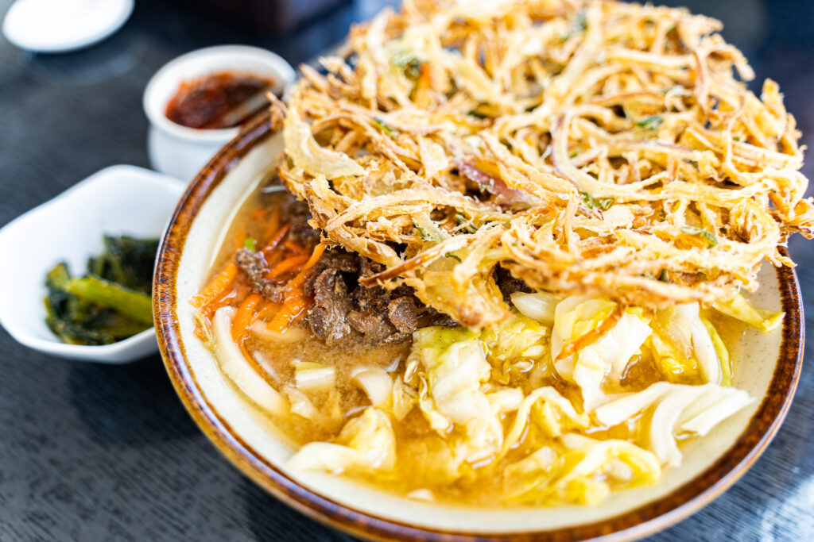
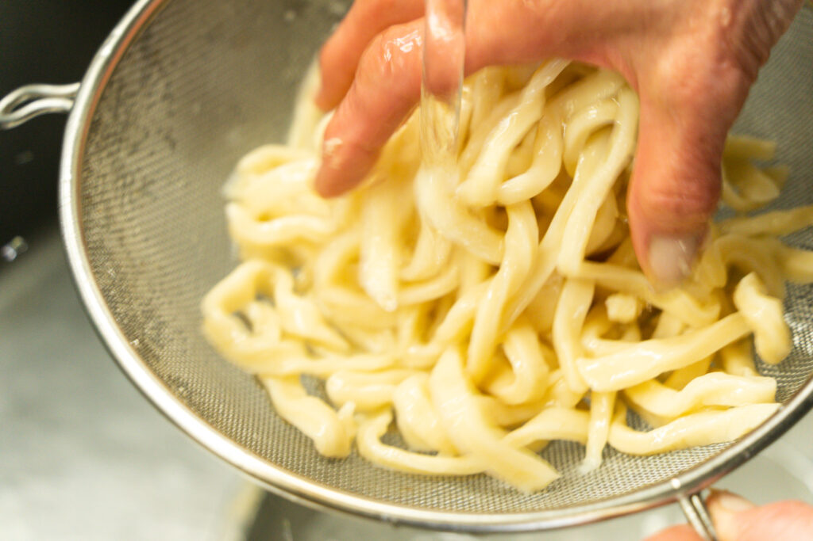
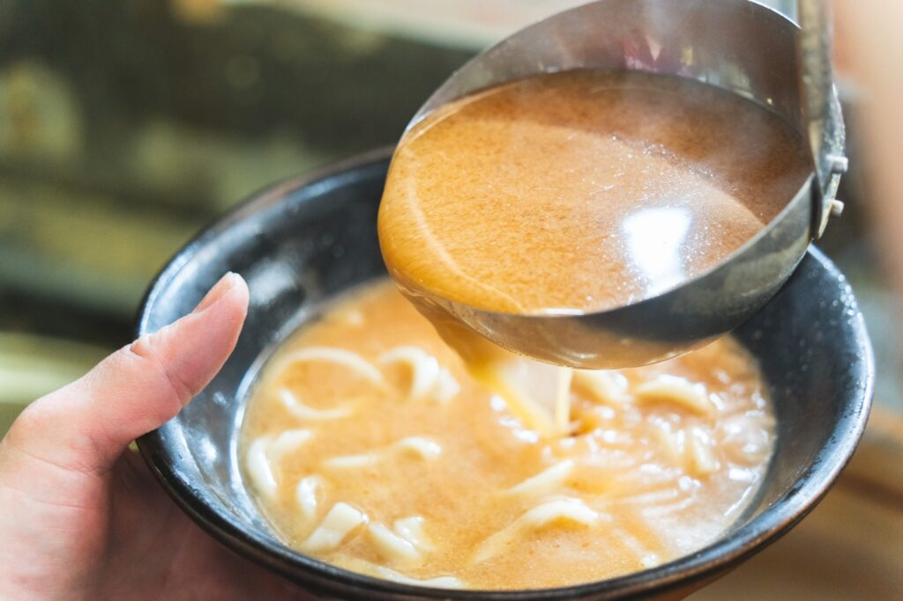
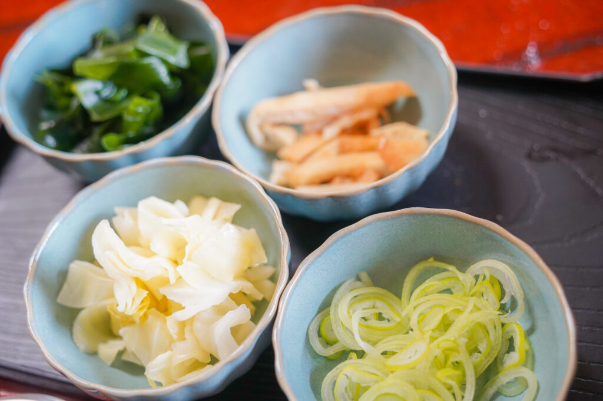
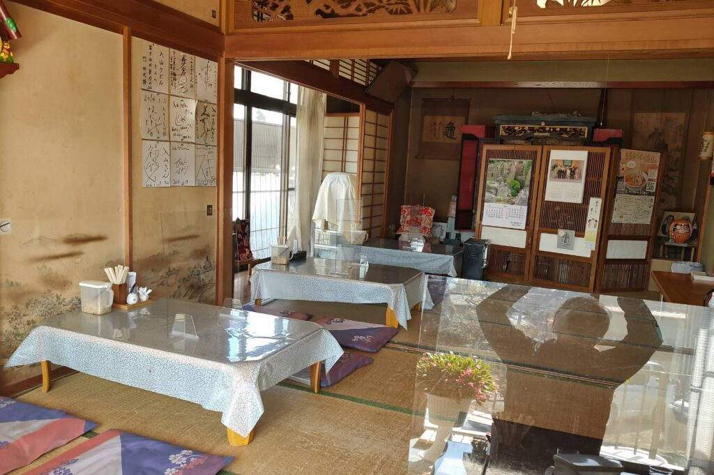

What is Yoshida Udon?

Yoshida Udon is a local udon dish loved in Fujiyoshida City and the surrounding Lake Kawaguchi area in Yamanashi Prefecture.
It is a unique type of udon characterized by its firm and chewy noodles, as well as toppings such as horse meat and cabbage.
In the early Showa period, the main industry in Fujiyoshida was the textile industry, with over half of the households in the Shimo-Yoshida district engaged in textile production. In order to ensure that the women operating the textile machinery could continue working without interruption during lunchtime and to prevent the women’s hands from becoming rough from handling textiles, it is said that men started making udon for lunch. The men vigorously kneaded the udon to create a filling meal, leading to the prevalence of udon with a satisfying texture and chewiness. Even today, you can enjoy traditionally made udon that is kneaded with great strength at udon shops.
Five features of Yoshida Udon.
The features of Yoshida Udon include thick and chewy noodles, toppings such as horse meat and cabbage, and a broth made by combining miso and soy sauce. Adding a spicy condiment called “suridane” is also unique to this place in Japan.
Since Yoshida Udon was originally a home-cooked dish, each shop has its own unique characteristics. For example, some shops use beef or horse meat, and the firmness and length of the noodles can vary.
While there are general guidelines, the freedom of not having clear and strict rules may also be a characteristic of Yoshida Udon.
Feature 1 of Yoshida Udon: Noodles.

One of the biggest features is the extremely firm and chewy noodles.
When you think of udon, it is usually round in shape with a soft and smooth texture. However, Yoshida Udon typically has thick, twisted noodles with a nearly square cross-section. Moreover, the thickness and length of the noodles can vary. Once you develop a liking for the firmness of the noodles, you’ll want to visit various shops to explore.
Especially when ordering it cold, Yoshida Udon’s firmness is unmatched in other regions. Some people even mistakenly think, “Are these noodles not cooked?”
Feature 2 of Yoshida Udon: Udon soup.

The base of the broth can vary depending on the household or the shop, including ingredients such as dried bonito stock, shiitake mushroom stock, soy sauce, and miso.
The most common is a blend of soy sauce and miso, but there are also shops that specialize in miso-based or soy sauce-based broths, each using their own carefully selected ingredients.
Furthermore, some shops offer unique variations of udon, such as curry udon.
Feature 3 of Yoshida Udon: Toppings.

The typical toppings for udon are green onions, fried tofu, tempura, and more. However, the representative topping for Yoshida Udon is none other than “boiled cabbage.”
Cabbage, known for its digestion-aiding properties, is always included as a topping for udon.
In addition, many shops feature “horse meat” as the meat topping.
Other toppings can vary depending on the shop, such as kinpira gobo (sauteed burdock root), tempura made with fish cake (chikuwa) or vegetables, raw egg, and mountain vegetables. By adding toppings, you can customize your udon to your liking.
Adding kinpira gobo to udon may sound new, but it is also recommended as one of the flavorful topping choices.
Some shops even provide tenkasu (tempura scraps) on the table, allowing you to add your preferred amount of toppings by yourself.
Feature 4 of Yoshida Udon: “Suridane.”

“Suridane” is an essential seasoning for Yoshida Udon, made from red chili pepper, sesame, sesame oil, and sansho (Japanese pepper). Similarly, it varies depending on the shop, with some stir-frying it in oil and others adding soy sauce, sugar, or bonito flakes to establish their own unique flavor.
Feature 5 of Yoshida Udon: Shops.

There are many Yoshida Udon shops that have been in business for a long time.
Some operate as udon shops right in a corner of their homes, while others use their living rooms or guest rooms.
It gives you a feeling as if you are having udon at your grandmother’s house.
Many shops operate on a style where they are open only for lunch hours.
If you have any specific shops you are interested in, it is recommended to research them in advance.